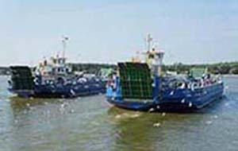
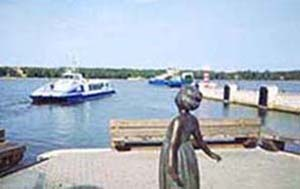
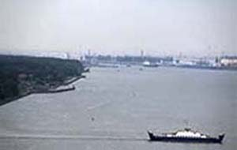

Smiltynė



Smiltynė – tai Klaipėdos uosto dalis, esanti Kuršių nerijos nacionaliniame parke, kitame Kuršių marių krante, nei likusi Klaipėdos miesto teritorija. Smiltynę su Klaipėdos centru jungia Tarptautinė Smiltynės jūrų perkėla. Kaip ir visą Kuršių nerijos nacionalinį parką, Smiltynę puošia gražūs miškai, o pajūriu driekiasi švelnaus, balto smėlio kopos ir paplūdimiai.